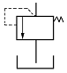
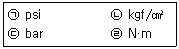

지게차유사(롤러,기중기등) (2014-01-26 기출문제)
1. 4행정 기관에서 흡·배기밸브가 모두 열려있는 시점은?
- 흡입행정 말
- 압축행정 초
- 폭발행정 초
- 배기행정 말
(정답률: 63%)

2. 기관 윤활장치의 유압이 낮아지는 이유가 아닌 것은?
- 오일의 점도가 높을 때
- 베어링 윤활간극이 클 때
- 오일팬 오일이 부족 할 때
- 압력조절 스프링 장력이 약할 때
(정답률: 70%)
3. 디젤기관에 과급기를 설치하였을 때 장점이 아닌 것은?
- 동일 배기량에서 출력이 감소하고, 연료소비율이 증가된다.
- 냉각 손실이 적으며 높은 지대에서도 기관의 출력 변화가 적다.
- 연소상태가 좋아짐으로 압축온도 상승에 따라 착화지연이 짧아진다.
- 연소상태가 양호하기 때문에 비교적 질이 낮은 연료를 사용할 수 있다.
(정답률: 56%)
4. 내연기관의 동력전달 순서가 맞는 것은?
- 피스톤-커넥팅로드-플라이 휠-크랭크축
- 피스톤-커넥팅로드-크랭크축-플라이 휠
- 피스톤-크랭크축-커넥팅로드-플라이 휠
- 피스톤-크랭크축-플라이 휠-커넥팅로드
(정답률: 70%)
5. 디젤기관의 연료장치에서 프라이밍 펌프의 사용 시기는?
- 출력을 증가시키고자 할 때
- 연료계통에 공기를 배출할 때
- 연료의 양을 가감할 때
- 연료의 분사압력을 측정할 때
(정답률: 63%)
6. 기관의 밸브 간극이 너무 클 때 발생하는 현상에 관한 설명으로 올바른 것은?
- 정상온도에서 밸브가 확실하게 닫히지 않는다.
- 밸브 스프링의 장력이 약해진다.
- 푸시로드가 변형이 된다.
- 정상온도에서 밸브가 완전히 개방되지 않는다.
(정답률: 44%)
7. 인젝터의 점검 항목이 아닌 것은?
- 저항
- 작동온도
- 분사량
- 작동음
(정답률: 31%)
8. 기관에서 발생하는 진동의 억제 대책이 아닌 것은?
- 플라이 휠
- 캠 샤프트
- 밸런스 샤프트
- 댐퍼 폴리
(정답률: 31%)
9. 피스톤과 실린더 사이의 간극이 너무 클 때 일어나는 현상은?
- 엔진의 출력 증대
- 압축압력 증가
- 실린더 소결
- 엔진 오일의 소비증가
(정답률: 76%)
10. 기관의 윤활유 소모가 많아질 수 있는 원인으로 옳은 것은?
- 비산과 압력
- 비산과 희석
- 연소와 누설
- 희석과 혼합
(정답률: 80%)
11. 엔진 과열 시 먼저 점검할 사항으로 옳은 것은?
- 연료분사량
- 수온 조절기
- 냉각수 양
- 물 재킷
(정답률: 77%)
12. 사용하던 라디에이터와 신품 라디에이터의 냉각수주입량을 비교했을 때 신품으로 교환해야 할 시점은?
- 10% 이상의 차이가 발생했을 때
- 20% 이상의 차이가 발생했을 때
- 30% 이상의 차이가 발생했을 때
- 40% 이상의 차이가 발생했을 때
(정답률: 66%)
13. 시동 스위치를 시동(ST)위치로 했을 때 솔레노이드 스위치는 작동되나 기동 전동기는 작동되지 않는 원인으로 틀린 것은?
- 축전지 방전으로 전류 용량 부족
- 시동 스위치 불량
- 엔진 내부 피스톤 고착
- 기동전동기 브러시 손상
(정답률: 47%)
14. 경음기 스위치를 작동하지 않았는데 경음기가 계속 울리고 있다면 그 원인은?
- 경음기 릴레이의 접점이 용착
- 배터리의 과충전
- 경음기 접지선이 단선
- 경음기 전원 공급선이 단선
(정답률: 69%)
15. 회로 중의 어느 한 점에 있어서 그 점에 흘러 들어오는 전류의 총합과 흘러가는 전류의 총합은 서로 같다는 법칙은?
- 렌쯔의 법칙
- 줄의 법칙
- 카르히호프 제1법칙
- 플레밍의 왼손 법칙
(정답률: 45%)
16. 시동키를 뽑은 상태로 주차했음에도 배터리에서 방전되는 전류를 뜻하는 것은?
- 충전전류
- 암전류
- 시동전류
- 발전전류
(정답률: 58%)
17. AC 발전기에서 전류가 흐를 때 전자석이 되는 것은?
- 계자 철심
- 로터
- 스테이터 철심
- 아마추어
(정답률: 41%)
18. 배터리에 대한 설명으로 옳은 것은?
- 배터리 터미널 중 굵은 것이 '+' 이다.
- 점프 시동할 경우 추가 배터리를 직렬로 연결한다.
- 배터리는 운행 중 발전기 가동을 목적으로 장착된다.
- 배터리 탈거 시 '+' 단자를 먼저 탈거한다.
(정답률: 46%)
19. 클러치 작동유 사용상 주의할 점으로 틀린 것은?
- 다른 종류와 섞어 쓰지 않는다.
- 공기 빼기 작업을 할 때는 하이드로 백을 통해 배출한다.
- 오일에 수분이 혼입되지 않도록 주의한다.
- 도장 면에 오일이 묻으면 벗겨지므로 주의한다.
(정답률: 56%)
20. 지게차 주차에 대한 설명으로 옳은 것은?
- 포크를 지면에서 약 20cm 정도 되게 놓는다.
- 포크의 끝이 지면에 접촉하도록 마스트를 전방으로 약간 기울여 놓는다.
- 마스트를 후방으로 기울여 놓는다.
- 경사지에 정지시키고 레버는 전진 위치에 놓는다.
(정답률: 73%)
21. 트랙의 장력은 실린더에 무엇을 주입하여 조절하는가?
- 그리스
- 유압유
- 기어 오일
- 엔진 오일
(정답률: 49%)
22. 상부 롤러와 하부 롤러의 공통점으로 맞는 것은?
- 싱글 플랜지형만 사용
- 설치 개수는 1~2개 정도
- 트랙의 회전을 바르게 유지
- 장비의 하중을 분산하여지지
(정답률: 45%)
23. 자주식 진동 롤러가 급경사지를 내려올 때 안전한 방법은?
- 구동 타이어를 앞쪽으로 하고 내려온다.
- 드럼 롤러를 앞쪽으로 하고 내려온다.
- 어느 쪽이나 상관없다.
- 지그재그 방향으로 내려온다.
(정답률: 66%)
24. 차량을 앞에서 보았을 때 알 수 있는 앞바퀴 정렬 요소는?
- 캠버, 토인
- 캐스터, 토인
- 캠버, 킹핀 경사각
- 토인, 킹핀 경사각
(정답률: 31%)
25. 기관의 회전은 상승하나 차속이 증속되지 않는 원인으로 옳은 것은?
- 클러치 스프링의 장력 감소
- 클러치 페달의 유격과대
- 클러치 파일럿 베어링 파손
- 릴리스 포크 마모
(정답률: 23%)
26. 아스팔트피니셔 기능으로 거리가 먼 것은?
- 고르기
- 진동
- 골재 혼합
- 살포
(정답률: 40%)
27. 2륜식 철륜 롤러의 종감속기어 장치의 설명으로 맞는 것은?
- 기어오일로 윤활 한다.
- 감속비가 적어야 한다.
- 추진축으로 구동 한다.
- 구동륜에 직접 설치되어 있다.
(정답률: 45%)
28. 아스팔트피니셔의 스크리드 히터에 주로 사용하는 연료는?
- 휘발유
- 엔진 오일
- LP가스
- 하이드로릭 오일
(정답률: 44%)
29. 일상점검에 대한 설명으로 가장 적절한 것은?
- 1일 1회 행하는 점검
- 신호수가 행하는 점검
- 감독관이 행하는 점검
- 운전 전·중·후 행하는 점검
(정답률: 61%)
30. 변속기의 구비조건이 아닌 것은?
- 회전수를 증가시킨다.
- 기관을 무부하 상태로 한다.
- 역전이 가능하게 한다.
- 회전력을 증대시킨다.
(정답률: 42%)
31. 등록 건설기계의 기종별 기호표시가 틀린 것은?
- 01 : 굴삭기
- 06 : 덤프트럭
- 07 : 기중기
- 09 : 롤러
(정답률: 56%)
32. 건설기계조종사면허에 관한 설명으로 옳은 것은?
- 건설기계 조종사면허는 국토교통부장관이 발급한다.
- 콘크리트믹서트럭을 조종하고자 하는 자는 자동차 제1종 대형 면허를 받아야 한다.
- 기중기면허를 소지하면 굴삭기도 조종할 수 있다.
- 기중기로 도로를 주행하고자 할 때는 자동차 제1종 면허를 받아야 한다.
(정답률: 62%)
33. 건설기계의 구조변경검사는 누구에게 신청할 수 있는가?
- 건설기계정비업소
- 자동차검사소
- 건설기계검사대행자
- 건설기계폐기업소
(정답률: 51%)
34. 건설기계조종사면허 신청 시의 첨부서류가 아닌 것은?
- 증명사진
- 신체검사서
- 주민등록등본
- 소형건설기계조종교육이수증(소형건설기계조종사면허증을 발급 신청하는 경우)
(정답률: 64%)
35. 건설기계의 등록 말소사유에 해당되지 않은 것은?
- 거짓이나 그 밖의 부정한 방법으로 등록을 한 경우
- 건설기계를 교육 ·연구 목적으로 사용하는 경우
- 최고(催告)를 받고 지정된 기한까지 정기검사를 받지 아니한 경우
- 건설기계조종사 면허가 취소된 때
(정답률: 34%)
36. 교육이수만으로 조종사 면허를 받을 수 있는 소형건설기계 중 반드시 자동차 운전면허소지자이어야 하는 것은?
- 5톤 미만의 불도저
- 3톤 미만의 굴삭기
- 3톤 미만의 지게차
- 5톤 미만의 로더
(정답률: 59%)
37. 건설기계관리법령상 특별 표지판을 부착하여야 할 건설기계의 법위에 해당하지 않는 것은?
- 길이가 16미터를 초과하는 건설기계
- 높이가 4.0미터를 초과하는 건설기계
- 총중량이 40톤을 초과하는 건설기계
- 최소회전반경이 12미터를 초과하는 건설기계
(정답률: 54%)
38. 건설기계의 검사를 연장 받을 수 있는 기간을 잘못 설명한 것은?
- 해외 임대를 위하여 일시 반출된 경우 : 반출기간 이내
- 압류된 건설기계의 경우 : 압류기간 이내
- 건설기계대여업을 휴지한 경우 : 휴지기간 이내
- 장기간 수리가 필요한 경우 : 소유자가 원하는 기간
(정답률: 83%)
39. 건설기계조종사면허를 받을 때의 결격사유에 해당하지 않는 것은?
- 앞을 보지 못하는 사람
- 건설기계조종사면허의 효력정지처분 기간 중에 있는 사람
- 나이가 만 18세인 사람
- 듣지 못하는 사람
(정답률: 66%)
40. 건설기계등록지를 변경한 때는 등록번호표를 시·도지사에게 며칠 이내에 반납하여야 하는가?
- 10
- 5
- 20
- 30
(정답률: 55%)
41. 그림과 같은 유압기호에 해당하는 밸브는?

- 체크 밸브
- 카운터 밸런스 밸브
- 릴리프 밸브
- 리듀싱 밸브
(정답률: 55%)
42. 다음 중 보기에서 압력 의 단위만 나열한 것은?

- ㉠ ㉡ ㉢
- ㉠ ㉡ ㉣
- ㉡ ㉢ ㉣
- ㉠ ㉢ ㉣
(정답률: 63%)
43. 유압장치에 사용되는 밸브 부품의 세척유로 가장 적절한 것은?
- 엔진오일
- 물
- 경유
- 합성세제
(정답률: 47%)
44. 유압모터의 회전력이 변화하는 것에 영향을 미치는 것은?
- 유압유 압력
- 유량
- 유압유 점도
- 유압유 온도
(정답률: 47%)
45. 유압장치에서 피스톤 로드에 있는 먼지 또는 오염 물질 등이 실린더 내로 혼입되는 것을 방지하는 것은?
- 필터(filter)
- 더스트 실 (dust seal)
- 밸브(valve)
- 실린더 커버 (cylinder cover)
(정답률: 38%)
46. 유압장치에서 압력제어밸브가 아닌 것은?
- 릴리프 밸브
- 체크 밸브
- 감압 밸브
- 시퀀스 밸브
(정답률: 52%)
47. 유압장치에서 유압의 제어방법이 아닌 것은?
- 압력제어
- 방향제어
- 속도제어
- 유량제어
(정답률: 48%)
48. 유압펌프에서 토출량에 대한 설명으로 맞는 것은?
- 펌프가 단위시간당 토출하는 액체의 체적
- 펌프가 임의의 체적당 토출하는 액체의 체적
- 펌프가 임의의 체적당 용기에 가하는 체적
- 펌프 사용 최대시간 내에 토출하는 액체의 최대 체적
(정답률: 66%)
49. 현장에서 유압유의 열화를 찾아내는 방법으로 가장 적합한 것은?
- 오일을 가열했을 때 냉각되는 시간 확인
- 오일을 냉각시켰을 때 침전물의 유무 확인
- 자극적인 악취 ·색깔의 변화 확인
- 건조한 여과지를 오일에 넣어 젖는 시간 확인
(정답률: 53%)
50. 유압모터의 속도를 감속하는데 사용하는 밸브는?
- 체크 밸브
- 디셀러레이션 밸브
- 변환 밸브
- 압력스위치
(정답률: 62%)
51. 안전·보건표지의 종류와 형태에서 그림의 표지로 맞는 것은?
- 안전복 착용
- 안전모 착용
- 보안면 착용
- 출입금지
(정답률: 87%)
52. 드라이버 사용 시 주의할 점으로 틀린 것은?
- 규격에 맞는 드라이버를 사용한다.
- 드라이버는 지렛대 대신으로 사용하지 않는다.
- 클럽(clip)이 있는 드라이버는 옷에 걸고 다녀도 무방하다.
- 잘 풀리지 않는 나사는 플라이어를 이용하여 강제로 뺀다.
(정답률: 72%)
53. 크레인 운전 시 운전자 안전수칙을 설명한 것으로 틀린 것은?
- 운반물을 작업자 머리 위로 운반해서는 안 된다.
- 운전석을 이석할 때는 크레인을 정지위치로 이동시킨 후 훅을 최대한 내려놓는다.
- 옥외크레인은 강풍이 불어올 경우 운전 및 옥외 점검정비를 제한한다.
- 운반물이 흔들리거나 회전하는 상태로 운반해서는 안 된다.
(정답률: 56%)
54. 마이크로미터를 보관하는 방법으로 틀린 것은?
- 습기가 없는 곳에 보관한다.
- 직사광선에 노출되지 않도록 한다.
- 앤빌과 스핀들을 밀착시켜서 둔다.
- 측정부분이 손상되지 않도록 보관함에 보관한다.
(정답률: 81%)
55. 벨트를 풀리에 걸 때는 어떤 상태에서 걸어야 하는가?
- 저속으로 회전 상태
- 중속으로 회전 상태
- 고속으로 회전 상태
- 회전을 중지한 상태
(정답률: 89%)
56. 지렛대 사용 시 주의사랑이 아닌 것은?
- 손잡이가 미끄럽지 않을 것
- 화물 중량과 크기에 적합한 것
- 화물 접촉면을 미끄럽게 할 것
- 둥글고 미끄러지기 쉬운 지렛대는 사용하지 말 것
(정답률: 81%)
57. 다음 중 전기 화재에 대하여 가장 적합하지 않은 소화기는?
- 분말 소화기
- 포말 소화기
- CO2 소화기
- 할론 소화기
(정답률: 43%)
58. 전장품을 안전하게 보호하는 퓨즈의 사용법으로 틀린 것은?
- 퓨즈가 없으면 임시로 철사를 감아서 사용한다.
- 회로에 맞는 전류 용량의 퓨즈를 사용한다.
- 오래되어 산화된 퓨즈는 미리 교환한다.
- 과열되어 끊어진 퓨즈는 과열된 원인을 먼저 수리한다.
(정답률: 85%)
59. 무거운 짐을 이동할 떼 설명으로 틀린 것은?
- 힘겨우면 기계를 이용한다.
- 기름이 묻은 장갑을 끼고 한다.
- 지렛대를 이용한다.
- 2인 이상이 작업할 때는 힘센 사람과 약한 사람과의 균형을 잡는다.
(정답률: 80%)
60. 산업재해 부상의 종류별 구분에서 경상해란?
- 부상으로 1일 이상 14일 이하의 노동 상실을 가져온 상해 정도
- 응급 처지 이하의 상처로 작업에 종사하면서 치료를 받는 상해 정도
- 부상으로 안하여 2주 이상의 노동 상실을 가져온 상해 정도
- 업무상 목숨을 잃게 되는 경우
(정답률: 54%)